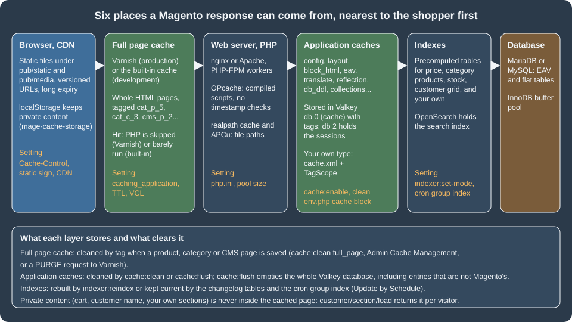

Caching, Indexing and Performance
|
This content was generated with the assistance of AI and should be verified against the official documentation before being relied on in production. |
This page was written against Magento 2.4.9 (generally available 2026-05-12, standard support until 2029-05-31) and checked on 2026-10-27. The
commands, files and measurements come from Mage-OS 3.6.0, the community distribution built on the Magento Open Source 2.4.9 code base, running
in Docker with PHP 8.5.12, Apache 2.4.69, MariaDB 11.8.9, OpenSearch 3.9.0 and Valkey 9.1.3 in developer mode; the documentation quoted is Adobe’s
for 2.4.9. Everything here applies to Magento Open Source and to Adobe Commerce on-premises; on Adobe Commerce on cloud infrastructure the services (Varnish, Valkey, OpenSearch, the database) are
provisioned and tuned from the cloud configuration files, and on Adobe Commerce as a Cloud Service there is nothing of this to operate, because caching and indexing are
managed by Adobe. The 2.4.9 platform raised the baseline: Valkey 9 replaces Redis (Redis 7.2 reached end of support and its licence changed), OpenSearch 3 replaces
Elasticsearch, MySQL 8.0 reached end of support on 2026-04-30, the tested database is MariaDB 12.3 (or MySQL 8.4), Varnish 8 and PHP 8.5, and symfony/cache
replaced the Zend cache library under the hood.
A Magento store is slow by default and fast by configuration. A catalog page is built from an EAV database (see
EAV and Attributes), a layout assembled from dozens of XML files and hundreds of blocks, and a design resolved through a theme chain
(see Frontend: Luma Themes); every one of those steps has a cache, an index or a precompiled form, and the job of an operator is to keep all
of them warm and correct. This page walks through the layers from the outside in: the cache types and their commands, Valkey as the store behind them, the full page cache (the built-in one and
Varnish), the private content mechanism that keeps personal data out of cached pages, indexers and materialized views including a complete custom indexer, and finally a production checklist with the PHP,
web server, database and operating system settings Adobe recommends. It builds on CLI, Cron and Message Queues, because cron is what keeps indexes current,
and on Architecture Overview for the application modes. The running example is Pocket Coffee: a module PocketCoffee_RoastIndex adds a custom indexer
for the roast shelf, a cache type of its own and a private content section for the Coffee Club greeting.
The layers

Read the figure from the left. A request is answered at the first layer that holds a valid copy, and every layer has its own way of being emptied. The rest of the page takes the layers in turn.
Cache types
What the types are
Magento’s application cache is divided into cache types, each declared by a module in etc/cache.xml, each switched on or off on its own and each holding a different kind of data. The test store has these 16
(15 core types plus one from a Mage-OS package; the output of bin/magento cache:status lists them; the descriptions are those of the cache.xml files):
| Type id | Label | What it holds |
|---|---|---|
|
Configuration |
The merged result of the XML configuration files collected across modules ( |
|
Layouts |
The layout building instructions for each handle after merging of all modules' and themes' layout XML. |
|
Blocks HTML output |
The HTML of blocks that declare a cache lifetime. A block is cached only if it provides |
|
Collections Data |
Collection data files; used by some admin and catalog collections. |
|
Reflection Data |
API interfaces reflection data used by the web API and by message queue serialisation. |
|
Database DDL operations |
Results of DDL queries such as describing tables or indexes. Cleaning it after a schema change is part of every upgrade. |
|
Compiled Config |
The interception (plugin) configuration compiled for fast lookup. |
|
EAV types and attributes |
Entity type and attribute definitions. Large because every attribute set and attribute is read from here. |
|
Customer Notification |
Flags used by the customer notification mechanism. |
|
GraphQL Query Resolver Results |
Results of resolvers of GraphQL queries (new in the 2.4.x line). |
|
Page Cache |
Full page caching: whole HTML pages when the built-in page cache is the configured application (Varnish keeps its pages itself, but the type still controls the Magento side). |
|
Integrations Configuration and Integrations API Configuration |
The integration configuration files. |
|
Web Services Configuration |
REST and SOAP configurations, generated WSDL. |
|
Translations |
Translation files. |
|
Compiled Plugins |
Not a Magento core type: it is declared by the package |
Adobe Commerce adds types for its own modules (for example target_rule, admin_ui_sdk and webhooks_response, which appear in Adobe’s own sample output); Open Source does not have them. The enabled/disabled state of each
type is stored in app/etc/env.php under cache_types ('config' => 1, ...), and that is why a deployment pipeline has to carry that file or run cache:enable.
The commands
| Command | Behaviour |
|---|---|
|
Prints the type ids and 1 (enabled) or 0 (disabled). |
|
Without arguments all types. In production mode these are the only supported way to change the state; in developer mode the state can also be changed in the Admin, after making |
|
Deletes the items of the enabled types only (disabled types are not cleaned), using the cache tags, so it leaves other applications that share the cache storage alone. This is the normal command after a deployment or a configuration change. |
|
Purges the whole cache storage of the type’s frontend. With Valkey this empties the entire Valkey database, including keys that do not belong to Magento, so never share the database number with another application. Adobe advises flushing only after cleaning did not solve a problem. |
The Admin equivalents are System > Tools > Cache Management, with the Flush Magento Cache button (the same as cache:clean) and Flush Cache Storage (the same as cache:flush). A type that is marked Invalidated in the grid has
been marked stale by code (Magento\Framework\App\Cache\TypeListInterface::invalidate(), which the indexer below calls) and wants a refresh at the next opportunity.
A custom cache type
A module can add its own cache type, so that its entries can be cleaned or switched off separately. It takes three things: the declaration in etc/cache.xml, a class extending
Magento\Framework\Cache\Frontend\Decorator\TagScope that adds a tag to everything it stores, and a reader that uses the class.
<?xml version="1.0"?>
<config xmlns:xsi="http://www.w3.org/2001/XMLSchema-instance"
xsi:noNamespaceSchemaLocation="urn:magento:framework:Cache/etc/cache.xsd">
<type name="pocketcoffee_roast"
translate="label,description"
instance="PocketCoffee\RoastIndex\Model\Cache\Type">
<label>Pocket Coffee Roast Shelf</label>
<description>Cached roast shelf rows for the storefront widget</description>
</type>
</config><?php
declare(strict_types=1);
namespace PocketCoffee\RoastIndex\Model\Cache;
use Magento\Framework\App\Cache\Type\FrontendPool;
use Magento\Framework\Cache\Frontend\Decorator\TagScope;
/**
* Cache type pocketcoffee_roast. TagScope adds CACHE_TAG to everything saved through it, so
* cache:clean pocketcoffee_roast removes only these entries, and they live in the "default" cache frontend
* (the Valkey database 0 of env.php).
*/
class Type extends TagScope
{
public const TYPE_IDENTIFIER = 'pocketcoffee_roast';
public const CACHE_TAG = 'POCKETCOFFEE_ROAST';
public function __construct(FrontendPool $cacheFrontendPool)
{
parent::__construct($cacheFrontendPool->get(self::TYPE_IDENTIFIER), self::CACHE_TAG);
}
}<?php
declare(strict_types=1);
namespace PocketCoffee\RoastIndex\Model;
use Magento\Framework\App\ResourceConnection;
use Magento\Framework\Serialize\SerializerInterface;
use PocketCoffee\RoastIndex\Model\Cache\Type as ShelfCache;
/**
* Reads the roast shelf, caching the rows for an hour under the pocketcoffee_roast cache type.
*/
class ShelfReader
{
private const CACHE_KEY = 'pocketcoffee_roast_shelf_rows';
private const LIFETIME = 3600;
public function __construct(
private readonly ResourceConnection $resource,
private readonly ShelfCache $cache,
private readonly SerializerInterface $serializer
) {
}
public function getRows(): array
{
$cached = $this->cache->load(self::CACHE_KEY);
if ($cached !== false) {
return $this->serializer->unserialize($cached);
}
$connection = $this->resource->getConnection();
$rows = $connection->fetchAll(
$connection->select()
->from($this->resource->getTableName('pocketcoffee_roast_shelf'), ['product_id', 'sku', 'type_id'])
->order('sku ASC')
);
$this->cache->save($this->serializer->serialize($rows), self::CACHE_KEY, [], self::LIFETIME);
return $rows;
}
}What each part does:
-
nameincache.xmlis the type id used bycache:enable|clean|flushand as the key inenv.phpcache_types.instanceis the class Magento builds for the type, andlabelanddescriptionappear in the Admin grid. -
TagScopewraps the cache frontend of the type (taken fromFrontendPoolby type id, so it lives in thedefaultfrontend, which is database 0 of Valkey in the test store) and adds the tagPOCKETCOFFEE_ROASTto every entry it saves.cache:clean pocketcoffee_roastthen removes exactly those entries, by tag. -
save($data, $identifier, $tags, $lifetime)stores a string; serialise arrays with theSerializerInterface(JSON), never with PHPserialize()on untrusted data. An empty tag list is fine, becauseTagScopeadds its own.load()returnsfalsewhen the identifier is missing.
What happened when it was installed and used:
$M module:enable PocketCoffee_RoastIndex && $M setup:upgrade && $M cache:flush
$M cache:status | grep pocket
# pocketcoffee_roast: 0 <- a new type starts disabled
$M cache:enable pocketcoffee_roast
# Changed cache status:
# pocketcoffee_roast: 0 -> 1
# Cleaned cache types:
# pocketcoffee_roast
# first PHP call of ShelfReader::getRows(): 3 rows, 10.3 ms (database read, then saved)
# second call: 3 rows, 0.09 ms (Valkey)
$M cache:clean pocketcoffee_roast
# next call again reads the database: 3 rows, 6.1 ms; the one after that 0.11 msIn Valkey the entry appeared as three keys in database 0: the data under <prefix>:POCKETCOFFEE_ROAST_SHELF_ROWS (a string), the set cache:id_tags:<prefix>POCKETCOFFEE_ROAST_SHELF_ROWS (the tags of the entry) and the set
cache:tags:<prefix>POCKETCOFFEE_ROAST (the identifiers that carry the tag), which is how clean-by-tag works without scanning. The prefix is the id_prefix of the frontend in env.php.
Valkey for cache and sessions
Why Valkey and what changed in 2.4.9
Redis was Magento’s recommended cache and session store. The 2.4.9 release notes introduced comprehensive support for Valkey 9.x, "driven by Redis 7.2 end-of-support and licensing changes", and the system requirements list Valkey 9 and no Redis for 2.4.9 (2.4.8-p5 and 2.4.7-p10 list Valkey 8.1; Redis is not listed for 2.4.7-p10 either). Valkey is a Redis-protocol server forked from Redis, so the wire protocol, the commands and the data layout are the same, and the PHP client does not change.
Two details of the 2.4.9 code base matter when you read older guides or configurations:
-
The backend id in
env.php(cache/frontend/<id>/backend) is now a short identifier,redisorvalkey, not the class nameMagento\Framework\Cache\Backend\Redisthat Adobe’senv.phpreference still shows. A data patch ofMagento_Backend(MigrateRedisBackendConfig) rewrites the old class names duringsetup:upgrade. The classMagento\Framework\Cache\Backend\Valkeyis a subclass of the Redis one that only differs in its type identifier, so the behaviour is shared. -
bin/magento setup:installandsetup:config:setnow accept parallel sets of options for Valkey:--cache-backend=valkey --cache-backend-valkey-server=... --cache-backend-valkey-db=...,--page-cache=valkey --page-cache-valkey-server=...and--session-save=valkey --session-save-valkey-host=...with the same suffixes (-port,-password,-compress-data,-compression-lib,-serializer,-use-lua,-use-lua-on-gc, and the session ones such as-max-concurrency,-first-lifetime,-disable-locking). The test store was installed with theredisflags against Valkey, which also works, and env.php shows theredisidentifier.
The configuration
The installer wrote these nodes to app/etc/env.php (shortened; the id_salt of the GraphQL cache and other secrets are not shown, and the server name is the container’s):
'cache' => [
'frontend' => [
'default' => [
'id_prefix' => '<prefix>_',
'backend' => 'redis', // 'valkey' is the new identifier for a Valkey server
'backend_options' => [
'server' => 'ec-magento-cache',
'database' => '0',
'port' => '6379',
'password' => '',
'compress_data' => '1',
'compression_lib' => '',
'serializer' => 'igbinary',
'use_lua' => '0',
'use_lua_on_gc' => '1',
],
],
'page_cache' => [
'id_prefix' => '<prefix>_',
'backend' => 'redis',
'backend_options' => [
'server' => 'ec-magento-cache',
'database' => '1',
'port' => '6379',
'compress_data' => '0',
'serializer' => 'igbinary',
],
],
],
'allow_parallel_generation' => false,
],
'session' => [
'save' => 'redis',
'redis' => [
'host' => 'ec-magento-cache',
'port' => '6379',
'database' => '2',
'timeout' => '2.5',
'max_concurrency' => '6',
'break_after_frontend' => '5',
'break_after_adminhtml' => '30',
'first_lifetime' => '600',
'bot_first_lifetime' => '60',
'bot_lifetime' => '7200',
'disable_locking' => '0',
'min_lifetime' => '60',
'max_lifetime' => '2592000',
// ... compression and Sentinel keys omitted
],
],| Key | Meaning |
|---|---|
|
The frontend that all cache types use unless they are assigned another. Database 0 here. |
|
The frontend of the built-in full page cache. With Varnish this entry is unused. |
|
Prepended to every key, so two Magento instances can share a Valkey database (the installer wrote a generated three-character prefix such as |
|
Compress the values before storing them. The installer enabled it for the default cache and left it off for the page cache. |
|
|
|
Use Lua scripts on the server for tag cleaning and for garbage collection of the tag sets. The installer left |
|
When true, several PHP processes may regenerate the same missing cache entry at once instead of waiting for a lock. The installer leaves it false. |
|
|
On the test store: valkey-cli info keyspace showed database 0 (the cache) with several hundred keys, no keys in database 1 (the built-in page cache had not been filled at that moment) and about two dozen sessions in database 2. The whole Valkey instance used 4.6 MB of memory,
and maxmemory was 0 (unlimited) with the policy noeviction, which are the defaults of the image. A production server should set maxmemory and the policy deliberately, as the next list says.
What Adobe recommends for the Valkey servers
-
Use one Valkey instance per purpose, that is sessions, the Magento cache and the full page cache, so that each can be sized, persisted and flushed independently. The Performance Best Practices say the default cache must not share the instance with the page cache.
-
Give the cache instance at least the size of the file-based cache folder (for example, if
var/cacheis 5 GB on disk, start with 5 GB of RAM); it needs no persistence because Magento can rebuild it. -
Enable persistence (RDB snapshots with
save, or the append-only file) for the session instance, because losing sessions logs everybody out and empties carts in progress. -
Optionally enable asynchronous deletion, which does not change the semantics:
lazyfree-lazy-eviction yes,lazyfree-lazy-expire yes,lazyfree-lazy-server-del yes,replica-lazy-flush yes,lazyfree-lazy-user-del yes. -
On a single web node, a local Valkey over a UNIX socket beats a network instance; with several web nodes, the network between the nodes and Valkey becomes the bottleneck and Adobe mentions a 1 Gbit or wider channel for hundreds of simultaneous requests.
-
Never run
cache:flushagainst a Valkey database that holds anything but the Magento cache.
Adobe’s page on software recommendations still says "Redis" in places; read it as Valkey for 2.4.9. Commands to look inside the server:
valkey-cli -n 0 dbsize
valkey-cli -n 0 --scan --pattern '*POCKETCOFFEE*' # the three keys of the custom type
valkey-cli -n 2 dbsize # number of sessions
valkey-cli info memory | grep -E 'used_memory_human|maxmemory'
valkey-cli config get maxmemory-policyThe full page cache
Built-in cache or Varnish
The full page cache (FPC) stores the finished HTML of cacheable pages (home, category, product, CMS, …) and serves it without building the layout. Magento has two implementations, selected by system/full_page_cache/caching_application
(Stores > Configuration > Advanced > System > Full Page Cache > Caching Application): 1 is the built-in cache, which runs inside PHP and stores in the page_cache frontend of env.php; 2 is Varnish, an HTTP
accelerator that sits in front of the web server. Adobe says both things plainly: use Varnish in production, because the built-in cache is "much slower than Varnish", and the built-in module is for development. The test store uses the built-in cache.
How a cacheable page is identified and refreshed, in both implementations:
-
A response is cacheable when the layout does not mark the page
cacheable="false"(one non-cacheable block, declared in layout XML withcacheable="false", makes the whole page uncacheable, which is the classic cause of "Varnish never hits"). -
Every block and model that shapes the page contributes cache tags (
cat_p_5for product 5,cat_c_3for category 3,cms_p_2for CMS page 2,cms_bfor CMS blocks, and so on) through theMagento\Framework\DataObject\IdentityInterface::getIdentities()method. The tags travel in theX-Magento-Tagsresponse header (the home page of the test store sentcat_c,store,cms_b,cms_p_2,FPC). -
When an entity is saved, Magento computes the tags and cleans every cached page that carries one of them: the built-in cache removes entries, Varnish receives HTTP
PURGErequests with the headerX-Magento-Tags-Pattern, and the VCL runsbanon the objects that match. -
The TTL is
system/full_page_cache/ttl(86400 seconds by default, as the config value showed), sent asX-Magento-Cache-Control: max-age=86400, public, s-maxage=86400while the client-facing header staysno-cache, so browsers do not keep pages.
The built-in cache can be seen at work with the debug header it adds in developer mode:
curl -s -D- -o /dev/null 'http://localhost:8082/?pcprobe=a1' | grep -i -E 'x-magento|cache-control'
# X-Magento-Cache-Debug: MISS <- first request of this URL
# X-Magento-Tags: cat_c,store,cms_b,cms_p_2,FPC
# X-Magento-Cache-Control: max-age=86400, public, s-maxage=86400
curl -s -D- -o /dev/null 'http://localhost:8082/?pcprobe=a1' | grep -i debug
# X-Magento-Cache-Debug: HITThe query string is part of the key, which is why the measurements below add a throw-away pcprobe parameter to force a miss without touching the cache configuration.
Measurements
Fifteen requests to distinct URLs of the home page (every one a miss), then twenty-five requests to one of them (every one a hit), with curl from the host to the Apache container, developer mode, empty catalog, shared laptop:
| Case | Median | Fastest | Slowest |
|---|---|---|---|
FPC miss (page built by Magento) |
78 ms |
62 ms |
3985 ms (one outlier while other containers were busy) |
FPC hit (built-in cache, served from Valkey) |
39 ms |
36 ms |
2327 ms (outlier) |
The hit is only half of the miss because PHP still boots and the built-in cache is a PHP script reading Valkey; with a populated catalog the miss grows into hundreds of milliseconds while the hit stays near the same value, and with Varnish the hit leaves PHP out entirely. These numbers show the shape, not the speed of a real server: the container is capped and developer mode adds work to every request.
Varnish
Varnish 8 is the supported version on-premises in 2.4.9 (the system requirements list it with nginx 1.30). The VCL file is generated from the Admin (Stores > Configuration > Advanced > System > Full Page Cache > Varnish Configuration, button Export VCL for Varnish 6 or 7 files) or from the command line:
bin/magento config:set system/full_page_cache/caching_application 2
bin/magento varnish:vcl:generate --export-version=7 --backend-host=web.example.test --backend-port=8080 \
--access-list=10.0.0.5 --grace-period=300 --output-file=/etc/varnish/default.vclThe options of varnish:vcl:generate are --access-list (IPs allowed to PURGE; repeatable; default localhost), --backend-host (default localhost), --backend-port (default 8080), --export-version (Varnish major version, default 6),
--grace-period (seconds, default 300), --input-file (a custom template), --output-file (without it the VCL is written to the console) and --enable-bfcache (default 1: allow the browser Back-Forward cache).
The command takes the template module-page-cache/etc/varnish7.vcl (or varnish6.vcl) and replaces the placeholders /* {{ host }} */, /* {{ port }} */, /* {{ ips }} */, /* {{ ssl_offloaded_header }} */, /* {{ design_exceptions_code }} */ and /* {{ grace_period }} */.
On the Mage-OS test store the command ran and wrote a file, but the placeholders were left unreplaced in the output. The reason is that Mage-OS ships the third-party module Elgentos_VarnishExtended, which provides its own varnish:vcl:generate
and VCL generator; the output above is therefore not what Adobe’s command produces, and a stock Magento Open Source installation was not available to compare. Varnish itself is not installed on the test store, so no VCL was loaded or served.
What the template (the module’s varnish7.vcl read from vendor) contains is stable and worth knowing:
-
vcl 4.0;andimport std;, with the comment "The minimal Varnish version is 7.0". The backend has.first_byte_timeout = 600sand a health probe on/health_check.php(timeout 2 s, interval 5 s, window 10, threshold 5). -
An
acl purgefilled from--access-list, and invcl_recvthePURGEhandling: a request needsX-Magento-Tags-PatternorX-Pool, andban("obj.http.X-Magento-Tags ~ " + req.http.X-Magento-Tags-Pattern)removes the matching objects. -
Query strings are sorted with
std.querysort, and marketing parameters (gclid,fbclid,utm_*,msclkid, …) are removed from the key so each campaign link does not create its own object. -
Static files (
/static/,/media/) are passed to the backend by default; the commented lines in the template show how to cache them in Varnish. Authenticated GraphQL requests withoutX-Magento-Cache-Idare passed. -
vcl_hashadds the value of theX-Magento-Varycookie (the customer group and similar) and the SSL-offloaded header to the hash, so the page of a wholesale customer is never served to a guest. -
vcl_backend_responsesetsberesp.grace = 3d, enables ESI for text responses, gzips JavaScript and text, and refuses to cache responses that are not 200 or 404 or that haveCache-Control: private.vcl_deliversetsX-Magento-Cache-DebugtoHIT,MISSorUNCACHEABLE, makes the browser-facingCache-Controlno-store, no-cachefor everything except static and media files, and removesX-Magento-Tags,X-Varnish,Via,ServerandX-Powered-Byfrom the response. -
vcl_hitimplements grace mode: after the TTL expires Varnish serves the stale object for the grace period while the backend is healthy, and indefinitely if the backend is unhealthy (thestd.healthycheck on the probe).
The deployment rules that matter: Varnish does not terminate TLS, so put nginx (or another TLS terminator) in front of it and pass the offloaded-protocol header named in the configuration (web/secure/offloader_header, X-Forwarded-Proto by default); the web server then listens on the backend port (8080) and Varnish on 80; if you delete var/cache
by hand, restart Varnish; and add the Varnish hosts to env.php as http_cache_hosts (bin/magento setup:config:set --http-cache-hosts=varnish.example.test:80) so Magento knows where to send the PURGE requests. Adobe describes optional extras: storing static assets in Varnish instead of a CDN (a VCL edit that removes cookies for static files),
and several Varnish servers.
Pitfalls of full page caching
-
A personalised block in a cacheable page. Anything that depends on the visitor (name, cart, prices per group not covered by
X-Magento-Vary) must come through private content, never through the block cache of the page. See the next section. -
GETrequests that change state. State-changing actions must use POST or PUT, because GET and HEAD can be cached and then the action never reaches Magento. -
The
Cache-Controlof custom controllers. A controller that sendsCache-Control: no-cacheor sets a cookie in a cacheable response makes it uncacheable. Layoutcacheable="false"has the same effect on a whole page. -
Stale pages after direct database changes. Import tools that write straight to the database bypass the tag-based cleaning: clean the cache (or
PURGEby tag) after they run. -
Mage-OS or other distributions. Modules such as
Elgentos_VarnishExtendedchange the VCL generation; read the distribution’s documentation when the stock command does not behave as Adobe’s page says.
With several web nodes, the built-in full page cache is replaced by Varnish in front of the pods (and purge fan-out to every Varnish), and the cache and session backends are managed Valkey; see Cloud: Varnish and Full Page Cache on Kubernetes and Cloud: OpenSearch, Valkey and RabbitMQ as Managed Services.
Private content
The full page cache stores one copy of a page for many visitors, so the page must not contain anything personal. Magento’s answer is private content: the cached HTML carries empty placeholders, and the browser fills them from a JSON endpoint,
GET /customer/section/load/?sections=<names>, keeping the result in localStorage (the key mage-cache-storage) through the Magento_Customer/js/customer-data library. The server side of one section has three parts.
A section source class in the CustomerData namespace implements Magento\Customer\CustomerData\SectionSourceInterface and returns an array:
<?php
declare(strict_types=1);
namespace PocketCoffee\RoastIndex\CustomerData;
use Magento\Customer\CustomerData\SectionSourceInterface;
use Magento\Customer\Model\Session;
/**
* Private content: data that differs per visitor and so cannot live in the shared full page cache.
* The browser asks for it with GET customer/section/load/?sections=pocketcoffee_club
* and keeps it in localStorage (mage-cache-storage).
*/
class ClubSection implements SectionSourceInterface
{
public function __construct(private readonly Session $customerSession)
{
}
public function getSectionData(): array
{
$loggedIn = $this->customerSession->isLoggedIn();
return [
'customer_group_id' => (int)$this->customerSession->getCustomerGroupId(),
'greeting' => $loggedIn
? __('Welcome back, %1', $this->customerSession->getCustomer()->getFirstname())
: __('Join the Coffee Club for 10% off beans'),
];
}
}A registration in di.xml that adds the class to the sectionSourceMap of Magento\Customer\CustomerData\SectionPoolInterface:
<?xml version="1.0"?>
<config xmlns:xsi="http://www.w3.org/2001/XMLSchema-instance"
xsi:noNamespaceSchemaLocation="urn:magento:framework:ObjectManager/etc/config.xsd">
<type name="Magento\Customer\CustomerData\SectionPoolInterface">
<arguments>
<argument name="sectionSourceMap" xsi:type="array">
<item name="pocketcoffee_club" xsi:type="string">PocketCoffee\RoastIndex\CustomerData\ClubSection</item>
</argument>
</arguments>
</type>
</config>Invalidation rules in etc/frontend/sections.xml: which requests make the browser reload which sections.
<?xml version="1.0"?>
<config xmlns:xsi="http://www.w3.org/2001/XMLSchema-instance"
xsi:noNamespaceSchemaLocation="urn:magento:module:Magento_Customer:etc/sections.xsd">
<action name="customer/account/loginPost">
<section name="pocketcoffee_club"/>
</action>
<action name="pocketcoffee/club/join">
<section name="pocketcoffee_club"/>
</action>
</config>Run on the test store, the section endpoint answers per visitor (here a guest):
curl -s -H 'X-Requested-With: XMLHttpRequest' 'http://localhost:8082/customer/section/load/?sections=pocketcoffee_club'
# {"pocketcoffee_club":{"customer_group_id":0,"greeting":"Join the Coffee Club for 10% off beans","data_id":1793120300}}Facts to keep in mind, from the documentation and from the run:
-
The
di.xmlmust be inetc/frontend/. The first version of the module declared the section in the globaletc/di.xml, and the endpoint answeredThe "pocketcoffee_club" section source isn't supported.The frontend area’s owndi.xmlfiles (those ofMagento_CustomerandMagento_Checkoutregistercart,customer,directory-dataand others there) replace the wholesectionSourceMaparray of the global scope instead of merging item by item, so the entry has to be in the area file.bin/magento dev:di:infoshows only the global configuration and made the global entry look correct. The same rule applies to any argument array that an area file also sets. -
An invalidation happens "on a POST or PUT request" to the action;
<section name="*"/>reloads everything for that action. An action with no sections (likecustomer/account/logout) invalidates all sections, but if another module’ssections.xmldeclares sections for the same action only those are invalidated, so logout rules can be overridden silently. -
The
cartsection also refreshes after thesection_data_lifetimeconfiguration (60 minutes by default) and on store or website switch; changes to a product’s name, price or status appear in the cart’s mini cart at those moments. -
The old
private_content_versioncookie and the$_isScopePrivateblock property are obsolete; do not use them. -
The page is rendered with an empty placeholder and a Knockout component binds the observable returned by
customerData.get('pocketcoffee_club')into it. The theme page Frontend: Luma Themes shows that component (roastBadge) rendering the greeting in the header.
Indexers
What an index is for
A Magento catalog is stored in EAV tables that are good for flexibility and bad for reading. Indexers copy the data into flat or denormalised tables (and into OpenSearch) that the storefront reads quickly. The test store has 11 indexers, all in the mode Update by Schedule:
| Indexer id | Title | Feeds |
|---|---|---|
|
Product Price |
The price index tables used by category and search pages (final prices per website and customer group, tier and catalog-rule prices). |
|
Category Products |
Which products are in which categories (anchor categories included). |
|
Product Categories |
The reverse relation, used on product pages and URL generation. |
|
Product EAV |
Values of filterable and searchable attributes for layered navigation. |
|
Catalog Search |
The OpenSearch index of products. Rebuilding it is the slowest reindex of a large catalog. |
|
Stock |
The legacy stock index (Inventory Management also has |
|
Inventory |
The multi-source inventory index (salable quantities per stock). |
|
Catalog Rule Product, Catalog Product Rule |
Which catalog price rules apply to which products and when. |
|
Customer Grid |
The table behind the Admin customer grid. |
|
Design Config Grid |
The table behind Content > Design > Configuration. |
Adobe Commerce adds indexers for its own features (Sales Rule, Target Rule, the SaaS data exporter feeds) and can move price indexing to a SaaS service when Live Search, Catalog Service or Product Recommendations are used; Open Source does not have them.
Modes and the changelog
An indexer runs in one of two modes:
-
Update on Save (
realtime): the index is updated in the same request that changes the data. It suits a tiny catalog with rare edits, and Adobe warns that it "can lead to significant delays and data unavailability during high loads". -
Update by Schedule (
schedule): the change is recorded, and cron applies it later in portions. This is what Adobe recommends for performance and what the test store uses.
The mechanism behind Update by Schedule is mview (materialised view, emulated with triggers). When an indexer is switched to schedule, Magento creates a changelog table named after the view with the suffix _cl (for the custom indexer below pocketcoffee_roast_shelf_cl, with columns version_id auto-increment and entity_id)
and AFTER INSERT, AFTER UPDATE and AFTER DELETE triggers on every table the view subscribes to. The triggers insert the changed entity ids into the changelog; the cron job indexer_update_all_views (group index) reads the rows after the last applied version_id and passes the ids to the indexer’s execute() method.
The state is in the table mview_state (mode enabled, status idle or working, version_id).
bin/magento indexer:info # ids and titles
bin/magento indexer:status [id ...] # status, mode and backlog ("idle (1 in backlog)")
bin/magento indexer:show-mode [id ...]
bin/magento indexer:set-mode schedule|realtime [id ...] # triggers are created / removed
bin/magento indexer:reindex [id ...] # full reindex now, once; all indexers if no id
bin/magento indexer:reset [id ...] # marks invalid; cron reindexes (group index)
bin/magento indexer:set-status valid|invalid|suspended [id ...] # since 2.4.7
bin/magento indexer:show-dimensions-mode # which dimension the price indexer splits by
bin/magento indexer:set-dimensions-mode catalog_product_price website
MAGE_INDEXER_THREADS_COUNT=3 bin/magento indexer:reindex catalogsearch_fulltextThe behaviour of each, from Adobe’s page and the test store:
-
indexer:set-modeshould be run in maintenance mode with cron disabled, to avoid database locks. If the triggers are missing while the mode isschedule, setrealtimeand thenscheduleagain, which recreates them. -
indexer:set-status suspendedstops cron from updating or reindexing an indexer (and those that share its index) during imports;indexer:reindexstill reindexes suspended indexers. Setting a suspended or invalid indexer tovalidwithout reindexing leaves stale data and can hurt performance. -
Parallel reindex needs the PHP
pcntlextension. Catalog Search Fulltext and Category Product parallelise by store view by default, Catalog Price by website and customer group once the dimension mode is changed fromnone(the test store showsProduct Price: none); the number of threads comes fromMAGE_INDEXER_THREADS_COUNTorenv.php. -
The customer grid indexer changed in 2.4.8: before, it only supported Update on Save; since 2.4.8 it supports both and defaults to Update by Schedule.
-
On a large catalog the full reindex of product price and search can take hours: schedule it, do not run it from the web, and keep
indexer_reindex_all_invalid(the cron job that reindexes whatever is invalid) running in theindexgroup.
The jobs of the index cron group, from the crontab.xml of Magento_Indexer: indexer_reindex_all_invalid (reindex every invalid indexer), indexer_update_all_views (apply the changelogs) and indexer_clean_all_changelogs (delete processed changelog rows). The group is run by bin/magento cron:run --group=index, or as part of a plain cron:run.
A custom indexer
A custom indexer takes four artifacts: the table that holds the result (declarative schema, see Declarative Schema and Patches), the indexer declaration, the mview declaration that says which tables to watch, and one class that
implements both Magento\Framework\Indexer\ActionInterface and Magento\Framework\Mview\ActionInterface.
<?xml version="1.0"?>
<schema xmlns:xsi="http://www.w3.org/2001/XMLSchema-instance"
xsi:noNamespaceSchemaLocation="urn:magento:framework:Setup/Declaration/Schema/etc/schema.xsd">
<table name="pocketcoffee_roast_shelf" resource="default" engine="innodb"
comment="Pocket Coffee roast shelf index">
<column xsi:type="int" name="product_id" unsigned="true" nullable="false" identity="false"
comment="Product ID"/>
<column xsi:type="varchar" name="sku" nullable="false" length="64" comment="SKU"/>
<column xsi:type="varchar" name="type_id" nullable="false" length="32" comment="Product type"/>
<column xsi:type="timestamp" name="indexed_at" nullable="false" default="CURRENT_TIMESTAMP"
on_update="false" comment="Indexed at"/>
<constraint xsi:type="primary" referenceId="PRIMARY">
<column name="product_id"/>
</constraint>
<index referenceId="POCKETCOFFEE_ROAST_SHELF_SKU" indexType="btree">
<column name="sku"/>
</index>
</table>
</schema>bin/magento setup:db-declaration:generate-whitelist --module-name=PocketCoffee_RoastIndex wrote etc/db_schema_whitelist.json with the table’s columns, index and primary key; declarative schema needs that file for later removals.
<?xml version="1.0"?>
<config xmlns:xsi="http://www.w3.org/2001/XMLSchema-instance"
xsi:noNamespaceSchemaLocation="urn:magento:framework:Indexer/etc/indexer.xsd">
<indexer id="pocketcoffee_roast_shelf"
view_id="pocketcoffee_roast_shelf"
class="PocketCoffee\RoastIndex\Model\Indexer\Shelf">
<title translate="true">Pocket Coffee Roast Shelf</title>
<description translate="true">Copies each product into the roast shelf table used by the storefront widget</description>
</indexer>
</config><?xml version="1.0"?>
<config xmlns:xsi="http://www.w3.org/2001/XMLSchema-instance"
xsi:noNamespaceSchemaLocation="urn:magento:framework:Mview/etc/mview.xsd">
<view id="pocketcoffee_roast_shelf"
class="PocketCoffee\RoastIndex\Model\Indexer\Shelf"
group="indexer">
<subscriptions>
<table name="catalog_product_entity" entity_column="entity_id"/>
</subscriptions>
</view>
</config><?php
declare(strict_types=1);
namespace PocketCoffee\RoastIndex\Model\Indexer;
use Magento\Framework\App\ResourceConnection;
use Magento\Framework\Indexer\ActionInterface as IndexerActionInterface;
use Magento\Framework\Mview\ActionInterface as MviewActionInterface;
use PocketCoffee\RoastIndex\Model\Cache\Type as ShelfCache;
use Magento\Framework\App\Cache\TypeListInterface;
/**
* Keeps pocketcoffee_roast_shelf in step with catalog_product_entity.
* One class serves both the indexer (Update on Save / full reindex) and the mview
* (Update by Schedule), as the core indexers do.
*/
class Shelf implements IndexerActionInterface, MviewActionInterface
{
private const TABLE = 'pocketcoffee_roast_shelf';
public function __construct(
private readonly ResourceConnection $resource,
private readonly TypeListInterface $cacheTypeList
) {
}
/** Full reindex: indexer:reindex pocketcoffee_roast_shelf */
public function executeFull(): void
{
$this->resource->getConnection()->truncateTable($this->resource->getTableName(self::TABLE));
$this->reindex(null);
}
/** Reindex a list of products: called when the indexer runs in "Update on Save" mode */
public function executeList(array $ids): void
{
$this->execute($ids);
}
/** Reindex one product */
public function executeRow($id): void
{
$this->execute([(int)$id]);
}
/** Called by the mview with the ids read from the changelog ("Update by Schedule") */
public function execute($ids): void
{
$ids = array_map('intval', (array)$ids);
if ($ids === []) {
return;
}
$connection = $this->resource->getConnection();
$connection->delete(
$this->resource->getTableName(self::TABLE),
['product_id IN (?)' => $ids]
);
$this->reindex($ids);
}
private function reindex(?array $ids): void
{
$connection = $this->resource->getConnection();
$select = $connection->select()->from(
['e' => $this->resource->getTableName('catalog_product_entity')],
['product_id' => 'entity_id', 'sku', 'type_id']
);
if ($ids !== null) {
$select->where('e.entity_id IN (?)', $ids);
}
$connection->query(
$connection->insertFromSelect(
$select,
$this->resource->getTableName(self::TABLE),
['product_id', 'sku', 'type_id'],
\Magento\Framework\DB\Adapter\AdapterInterface::INSERT_ON_DUPLICATE
)
);
$this->cacheTypeList->invalidate(ShelfCache::TYPE_IDENTIFIER);
}
}The attributes: in indexer.xml, id is the indexer id (what you pass to indexer:reindex), view_id links it to the mview with the same id, class is the action executed, title and description are shown by the CLI and the Admin; in mview.xml, view id and class name the same action, group is indexer (the changelog is processed by cron group index)
and each table node names a table to watch and the entity_column that holds the id of the entity to reindex. Additional table subscriptions (a price table, a category link table) make the index react to more changes; each costs a trigger, so subscribe only to the tables your index really depends on.
The five methods and when they are called: executeFull() for indexer:reindex and the Admin; execute($ids) from mview with the ids read from the changelog; executeList($ids) and executeRow($id) when the indexer is in Update on Save mode and code asks the indexer to reindex a batch or one entity (for example
$indexer->reindexRow($id)). The class must be idempotent, because mview can pass the same id more than once, and must not assume a particular order of ids.
Result on the test store:
$M cache:enable pocketcoffee_roast
$M indexer:status | grep pocket
# pocketcoffee_roast_shelf Pocket Coffee Roast Shelf Reindex required Schedule idle (0 in backlog)
$M indexer:reindex pocketcoffee_roast_shelf
# Pocket Coffee Roast Shelf index has been rebuilt successfully in 00:00:00
# table pocketcoffee_roast_shelf: product 1 POCKET-001, product 2 PC-ETH-WHL-250
# SHOW TRIGGERS LIKE 'catalog_product_entity' now lists trg_catalog_product_entity_after_insert|update|delete,
# each inserting into pocketcoffee_roast_shelf_cl as well as the core changelogs.
# create a product through the REST API (PC-IDX-PROBE) -> pocketcoffee_roast_shelf_cl: version_id 1, entity_id 3
$M indexer:status | grep pocket
# ... Ready Schedule idle (1 in backlog)
$M cron:run --group=index # run twice: the first run schedules, the second executes the jobs
# table pocketcoffee_roast_shelf now has PC-IDX-PROBE (product_id 3); backlog 0Notes from the run: a new indexer starts as Reindex required and in schedule mode; the first cron:run --group=index only wrote the cron_schedule rows and the second executed indexer_update_all_views; the changelog row stays after it was applied and is removed later by indexer_clean_all_changelogs. The probe product was deleted afterwards and the index was rebuilt. The execute() of the class invalidates the custom cache type with TypeListInterface::invalidate(), so the Admin shows Invalidated for it after every index change.
Performance checklist and server tuning
The cache layers and the indexers are the application half of performance. The other half is the platform they run on. The table below is a checklist for a production store; every value comes from Adobe’s Performance Best Practices, the system requirements and the PHP settings pages, or is an observation from the test store, and the "tested" column says whether it could be run.
| Area | Setting | Tested here |
|---|---|---|
Application mode |
|
|
Caches |
All cache types enabled (); Varnish for the full page cache. |
built-in FPC only |
Indexers |
Update by Schedule, cron group |
yes (custom indexer) |
Cron |
One crontab line per installation calling |
|
Static content |
|
the theme’s files deployed in 4.7 s (see the theme page) |
JavaScript and CSS (Stores > Configuration > Advanced > Developer, shown in default or developer mode only) |
Minify CSS and JavaScript and HTML: Yes; Enable JavaScript Bundling: Yes (built-in bundling is a fallback; Adobe prefers third-party tools such as r.js); Merge CSS/JS: not recommended (deprecated, breaks RequireJS); HTTP/2 is an alternative to bundling. Every one of these is unset (0) by default on the test store, and |
read with |
PHP memory |
|
test store 2G |
PHP realpath cache |
|
set on the test store |
PHP OPcache |
|
test store: 256 MB, 60000 files, |
PHP extensions |
Only the required ones (bcmath, ctype, curl, dom, fileinfo, gd, hash, iconv, intl, json, libxml, mbstring, openssl, pcre, pdo_mysql, simplexml, soap, sockets, sodium, tokenizer, xmlwriter, xsl, zip, plus spl for Adobe Commerce). Profilers and debuggers cost: an idle Xdebug can add up to 30% to response time. |
|
APCu and Composer |
Enable APCu and a Composer autoloader optimised for it ( |
APCu not installed in the container |
Web server |
nginx with PHP-FPM is the production pairing (Apache is supported). Use Magento’s |
Apache with mod_php; the samples read |
Database |
|
the container’s MariaDB 11.8 has a 192M buffer pool |
Operating system |
|
no (container) |
Asynchronous work |
Asynchronous e-mail notifications (Sales Emails); asynchronous order data processing; |
not enabled |
Search |
OpenSearch 3 (2.x compatible) with enough heap; the search index is the catalogsearch_fulltext indexer. |
OpenSearch 3.9.0, 512 MB heap |
Sessions and cache |
Valkey, separate instances, persistence for sessions. |
one instance, three databases |
PHP and the web server
The PHP settings above go in php.ini (or in the PHP-FPM pool, with php_admin_value); the PHP settings page also asks for the same opcache.save_comments=1 and the memory limits, and says to restart the web server afterwards. The test store’s PHP already had the
10M/7200 realpath cache, opcache.save_comments=1 and a 256 MB OPcache with 60000 files; the 512 MB figure of the table is Adobe’s sizing for stores with many extensions. A production pool for nginx and PHP-FPM looks like the following sketch. The numbers are starting points to be
checked against memory_limit and the measured memory of a worker, not Adobe values (Adobe gives no PHP-FPM pool numbers); it was not run, since the test store uses Apache.
; /etc/php/8.5/fpm/pool.d/magento.conf (sketch)
[magento]
user = www-data
group = www-data
listen = /run/php/php-fpm-magento.sock
pm = static
; workers = RAM reserved for PHP / average resident size of a worker (measure it with ps)
pm.max_children = 24
pm.max_requests = 1000
php_admin_value[memory_limit] = 1G
php_admin_value[opcache.memory_consumption] = 512
php_admin_value[opcache.max_accelerated_files] = 60000
php_admin_value[opcache.validate_timestamps] = 0
php_admin_value[opcache.save_comments] = 1
php_admin_value[realpath_cache_size] = 10M
php_admin_value[realpath_cache_ttl] = 7200upstream fastcgi_backend {
server unix:/run/php/php-fpm-magento.sock;
}
server {
listen 8080; # behind Varnish; listen 80/443 if there is no Varnish
server_name store.example.test;
set $MAGE_ROOT /var/www/html;
set $MAGE_MODE production;
include /var/www/html/nginx.conf.sample;
}What the nginx.conf.sample of the 2.4.9 code base does, read from the file in the container: it forwards /index.php, /get.php, /static.php, health_check.php and the error pages to fastcgi_backend with fastcgi_buffers 16 16k and fastcgi_buffer_size 32k, a PHP memory limit of 756M and max_execution_time 18000 (five hours) set through PHP_VALUE, fastcgi_read_timeout 600s;
serves /static/ and /media/ directly with long expiries (the /static/ block carries Cache-Control "public, max-age=31536000, immutable" for files of the versioned URL; the comment says to uncomment the header in production); sets no-store for downloads such as .zip, .csv and .xml;
compresses text with gzip level 6; blocks .php, .phtml, .htaccess and .git outside the entry points; and carries a commented load_module line for the optional image filter module. The setup and update tools sit behind their own location blocks with higher limits. For Apache the equivalent is the .htaccess in the root, pub/.htaccess (mod_deflate) and pub/static/.htaccess (immutable expiry for versioned static files, no-store for archives),
which need mod_rewrite, mod_expires, mod_headers and mod_deflate.
What the older books recommend, and what to do instead
The Magento 2 books of 2016 and 2017 still turn up in searches. Their performance chapters describe the 2.0 and 2.1 platform and need a correction before use: they suggest running the PHP engine HHVM (not supported by Magento any more), use the MySQL fulltext search (the supported engines in 2.4 are OpenSearch and, in older lines, Elasticsearch), tune Apache prefork or mod_php as the main path (Adobe now documents nginx with PHP-FPM as the production
pairing), configure Varnish 3 or 4 VCL by hand (use the VCL exported for the Varnish version you run), use Redis rather than Valkey, and do not know about immutable static URLs, HTTP/2, WebP or mview-based indexers on separate schedules. The advice that has not aged is the principle: measure first, cache at the outermost layer that is safe, put sessions and cache on a fast in-memory store, give the database memory, and keep indexes on schedule.
Images, CDN and the browser
Product images are the heaviest part of a catalog page. Magento resizes them to the sizes declared in the theme’s etc/view.xml and stores the results under pub/media/catalog/product/cache; the resizing can run asynchronously through the media.storage.catalog.image.resize consumer.
Serve pub/media and pub/static from a CDN or from the web server with long expiries (the samples already do), use WebP or AVIF where the platform and theme support it, and set explicit width and height on images in templates to avoid layout shifts. The general techniques are the subject of the
responsive images and thumbnails page and of the loading performance page on this site; the Hyvä and Edge Delivery storefronts discussed in
Frontend: Hyvä, PWA Studio and Edge Delivery change the front-end half of this checklist, but not the caches, indexers or database below them.
Monitoring what you tuned
-
bin/magento cache:status,indexer:statusandqueue:consumers:listplus thecron_scheduletable answer "is the machinery running" in seconds. -
The backlog column of
indexer:statusis the cheapest alert: a growing backlog means theindexcron group is not running or is too slow. -
X-Magento-Cache-Debug(developer mode) and the Varnishvarnishstathit rate show whether the page cache works; in production a low hit rate usually means a cookie, a non-cacheable block or too short a TTL. -
The MariaDB slow query log and
SHOW ENGINE INNODB STATUSfor the database; the OPcache status functions (opcache_get_status()) to see whether 60000 files and 512 MB are enough.
What could not be run
The module’s PHP files passed php -l and vendor/bin/phpcs --standard=Magento2 --severity=6 (no errors; one long-line warning in indexer.xml), and its XML files validated against Magento’s XSDs with xmllint --schema. The following were not run:
-
Varnish: no Varnish server is installed, so no VCL was loaded, no PURGE was sent and no Varnish hit rate was measured. The VCL facts come from the module’s
varnish7.vcltemplate and Adobe’s pages. The measured hit and miss times are for the built-in cache. -
Production mode:
deploy:mode:set production,setup:di:compilefor the whole code base and the fullsetup:static-content:deploywere not run on the shared store, so minification, bundling, merged files andvalidate_timestamps=0are described, not measured. The static deployment of one theme was run (see the theme page). -
OPcache, PHP-FPM, nginx, kernel and MariaDB tuning: the container uses Apache with
mod_php, a capped memory and a small buffer pool, so the tuning values are Adobe’s, not results. -
RabbitMQ and the system crontab (see the CLI, cron and message queues page); Valkey persistence, replication and Sentinel; the Cloud variables and ACCS (nothing to tune there).
-
The Adobe Commerce-only caches and indexers, Live Search and SaaS price indexing.
References
-
Ray Bogman and Vladimir Kerkhoff, Magento 2 Cookbook, Packt, 2016 (server and tuning recipes for Magento 2.0, read with the corrections above)
-
Media optimization on this site: responsive images and thumbnails